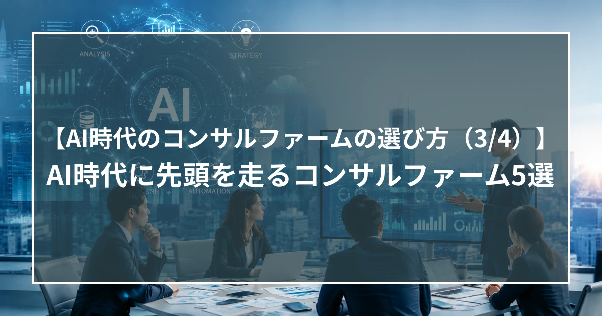
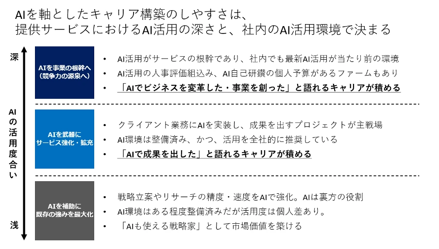

【AI時代のコンサルファームの選び方（3/4）】 AI時代に先頭を走るコンサルファーム5選

はじめに
「AIに強いファームに行きたい。でも、どこがどう違うのか分からない」――求職者の方からのよくいただくこうした声に応えるべく、AI活用で先頭を走る5社を、私たちステラキャリアズの視点から整理しました。
※記載の社名・数値・各社の状況は執筆時点の情報・見解に基づくものであり、最新の状況とは異なる場合があります。
ファームを見分ける2つの要素、AIキャリアを築きやすい環境
AIを軸としたキャリア構築を考える上で、大きく2つの要素が重要になります。ひとつは所属する会社の提供サービスにおけるAI活用の深さ、もうひとつは社内のAI活用環境です。端的に言えば、「どこに身を置くか」が大きく影響する、ということになります。また、各ファームのAIの活用度は大きく3段階に分かれます。深いほうから「AIを事業の根幹へ（競争力の源泉へ）」「AIを武器としてサービス強化・拡充」「AIを補助として既存の強みを最大化」どの段階のファームに身を置くかで、積めるキャリアの「語り口」が変わります。

今回は、特に「AIを事業の根幹」とするファームについて、それぞれ解説していきます。
1.アクセンチュア――AI活用で先頭を走る存在
対外サービスと社内活用の両面で先行しております。外部面の強みは、エンジニアとデータサイエンティストを国内でも最大規模の規模で抱えていること。AI・デジタルを活用した全社変革・全社戦略から実装まで、自社だけで一気通貫できるという強みは、他社にはない強みです。フルクラッチやオーダーメイドにも対応でき、日本の大手企業や省庁のシステム関連で広く存在感を持っています。
社内活用も同様で、エンジニアやデータサイエンティストから直接学べる環境があり、海外を含む世界中の講義を無料で受けることができます。各種AIツールに加えて、PowerPointの自動生成やデータ分析などの自社オリジナルツールも多数整備。「業務でAIを使いこなし、その知見を顧客に還元する」サイクルの速さに強みがあります。早くからの取り組み、リソースも豊富であることから、私たちはAI活用を最も先行するファームのひとつと見ています。
2.PwC――ビッグ4で頭一つ抜ける環境整備
ビッグ4は横並びに見えがちですが、AIの文脈ではPwCが一歩抜けています。鍵は、AI開発企業との提携と、生成AIを使いこなせる環境作り。例えばローカルのファイルを直接読み書きできるエージェント機能（Claude Code のようなツール）を、社内で実際に利用できる点が魅力です。
これは、使える会社と使えない会社が分かれるところで、エージェント機能を社内で活用でき、かつ対外サービスとしても展開できる環境とサービスラインを併せ持っている特徴です。
3.イグニッション・ポイント——新興ファーム随一のAIプレゼンス
2014年設立の比較的若いファームで、年平均約1.7倍で売上を伸ばし続けている、勢いのあるファームです。コンサルティングに加えて「イノベーション」「インベストメント」――自ら新規事業を創出し、ファンドも運用する――という領域を持つという点が特徴で、コンサルで培った知見を新規事業やファンド運用に活かし、自らリスクを取る会社です。
AIの観点では新興ファームの中で頭一つ抜けており、もともと新規事業に強く（AIと新規事業の創出は相性が良い）、初期からAIにも取り組んできました。金融機関向けのAIサービスやR&Dの文脈の案件も手がけ、社内案件の約4割がAI関連。主要なAIツールは業務で活用でき、大規模なAI専門部署、全社公開の勉強会、個人ごとの自己研鑽予算など、社内環境も充実しています。
4.スラローム（Slalom）――知る人ぞ知る、戦略×データの実力派
北米では2001年設立、全世界約1万3千人を擁し、A.T.カーニーなどと肩を並べる戦略×データのファームです。2021年に日本へ進出、現在約100名で急成長中。特徴は「クライアントの自走」への強いこだわりで、長期常駐で稼ぐモデルではなく、2〜3年で必ず区切り、知見を移管して、クライアント自身が走れる状態にする、という信念を持っています。
AI面では、戦略策定から実行まで、しかもエンジニアが社員の半数以上という構成で、テクノロジー実装までを一気通貫してできるリソースを持ちます。特定のサービスに依存せず、自社エンジニアでクライアントに本当に合ったものを提供できる点も強み。在籍者には、BCGやベイン出身者、Google出身の高い技術力を持つエンジニアが多く、ハイクラスの人材が集結している点も魅力的です。
5.グロービング（Globe-ing）――「コンサルタントのAI化」を掲げる戦略ファーム
2年前に上場し、株価が約2.4倍になるなど、市場からも「戦略×AI」で評価されているファームです。掲げるのは「コンサルタントをAI化し、コンサルティング事業そのものを再定義する」という志。議事録作成や情報整理といった作業をAIに任せ、コンサルタントは「示唆を出す」本来の価値にフォーカスする、という考え方です。
サービス形態は「ジョイントイニシアチブ」です。クライアントに就き込み、事業責任者のポジションを社内に作ってもらって複数名で実行責任を担います。グロービングで培った知識とAI活用をクライアントに埋め込んでいくモデルで、AIを活用しながら「戦略から成果創出まで」を経験できる点が、キャリアの魅力となります。
まとめ
AI時代に頭一つ抜けるコンサルファームを選ぶ上で、見るべき軸は2つあります。「サービスにおけるAI活用の深さ」と「社内のAI活用環境」です。活用度は3段階に分かれ、最も深いのはAIを事業の根幹=競争力の源泉に据える層。今回紹介する5社は、いずれもこの最前線にあります。アクセンチュアは対外・社内の両面で先頭を走り、PwCはビッグ4の中でエージェント機能を実務に組み込める点で一歩抜けます。新興のイグニッションポイントは社内案件の約4割がAI関連、スラロームは戦略×データと「クライアントの自走」を信条とし、グロービングは「コンサルタントのAI化」を掲げています。どの段階のファームに身を置くかによって、築くキャリアの「語り口」そのものが変わってくるのです。
＜次回＞【AI時代のコンサルファームの選び方（4/4）】AI時代のキャリアの分岐点
Go back to Insight